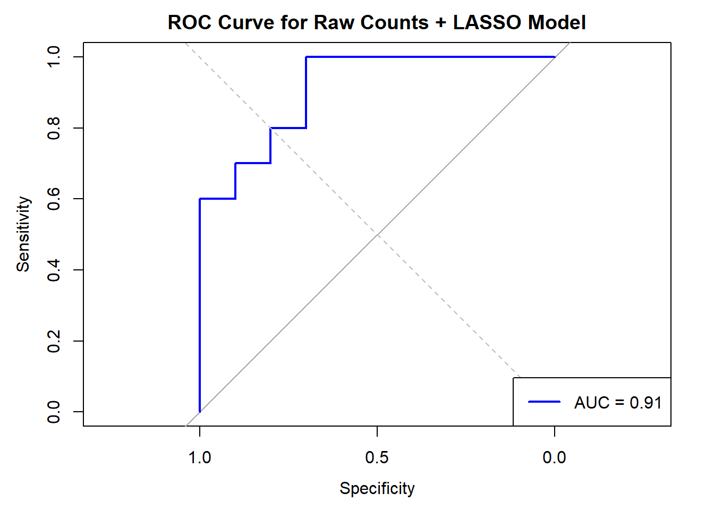

# Task mapping filetask <-read.delim("data/task.txt", header=TRUE)colnames(task) =c("SampleID","y","SubjectID")# OTU file (actual data)otu <-read.delim("data/otutable.txt", header =TRUE, check.names =FALSE)OTU = otu[,1]count_data =t(otu[,-1])colnames(count_data) = OTU# All of the sample IDs should come up in the datasetmatch_ids =sapply(task$SampleID, function(x) x %in%rownames(count_data))# Print how many IDs matchedcat("Number of matched sample IDs:", sum(match_ids), "out of", length(match_ids), "\n")
Number of matched sample IDs: 172 out of 172
SampleID =rownames(count_data)# Create true_y vector and convert Tumor/Healthy to numerictrue_y =rep(NA, nrow(count_data))subject_id =rep(NA, nrow(count_data))for(i in1:nrow(count_data)){if(SampleID[i] %in% task$SampleID){# Store as character values initially true_y[i] =as.character(task$y[task$SampleID == SampleID[i]]) subject_id[i] = task$SubjectID[task$SampleID == SampleID[i]] }}# Examine class distribution before proceedingprint("Class distribution in the full dataset:")
[1] "Class distribution in the full dataset:"
print(table(true_y))
true_y
Healthy Tumor
86 86
# Create the full datasetcount_data_all =data.frame(SampleID, y = true_y, subject_id, stringsAsFactors =FALSE)# Add count data columns one by one to avoid type conversion issuesfor(col incolnames(count_data)) { count_data_all[[col]] = count_data[, col]}count_data_clean = count_data_all[complete.cases(count_data_all),]# Examine class distribution after cleaningprint("Class distribution after cleaning:")
[1] "Class distribution after cleaning:"
print(table(count_data_clean$y))
Healthy Tumor
86 86
# Save the cleaned datawrite.csv(count_data_clean, "data/count_data_clean.csv")paired_counts <-table(count_data_clean$subject_id, count_data_clean$y)print("Subjects with both tumor and healthy samples:")
[1] "Subjects with both tumor and healthy samples:"
# Split data into training and testing sets set.seed(123)# Extract features and responseX <-as.matrix(count_data_clean[, !(colnames(count_data_clean) %in%c("SampleID", "y", "subject_id"))])# Make sure y is a proper factory <-factor(count_data_clean$y, levels =c("Healthy", "Tumor"))print("Full dataset class distribution:")
[1] "Full dataset class distribution:"
print(table(y))
y
Healthy Tumor
86 86
# Stratified sampling by subject and classtumor_subjects <-unique(count_data_clean$subject_id[count_data_clean$y =="Tumor"])healthy_subjects <-unique(count_data_clean$subject_id[count_data_clean$y =="Healthy"])# 70% from each classtrain_tumor_subjects <-sample(tumor_subjects, floor(0.7*length(tumor_subjects)))train_healthy_subjects <-sample(healthy_subjects, floor(0.7*length(healthy_subjects)))# Combine for trainingtrain_subjects <-c(train_tumor_subjects, train_healthy_subjects)train_idx <-which(count_data_clean$subject_id %in% train_subjects)test_idx <-setdiff(1:nrow(count_data_clean), train_idx)# Create training and testing datasetsX_train <- X[train_idx, ]y_train <- y[train_idx]X_test <- X[test_idx, ]y_test <- y[test_idx]print(table(y_train))
y_train
Healthy Tumor
76 76
print(table(y_test))
y_test
Healthy Tumor
10 10
# If we have imbalanced folds or train/test sets, use a simpler approach (fixes som errors I was having), used Claude.ai help for this sectionif (min(table(y_train)) <5||min(table(y_test)) <5) {cat("Warning: Small class counts detected, using a simpler approach\n")# Use a direct LASSO approach without cross-validation lambda_seq <-exp(seq(-8, 1, length.out =50)) direct_lasso <-glmnet(x = X_train, y = y_train, family ="binomial",alpha =1,lambda = lambda_seq )# Choose lambda that gives ~20 features n_features <-sapply(lambda_seq, function(l) {sum(coef(direct_lasso, s = l)[-1] !=0) # Count non-zero coefficients, excluding intercept })# Find lambda yielding closest to 20 features target_features <-20 best_lambda_idx <-which.min(abs(n_features - target_features)) best_lambda <- lambda_seq[best_lambda_idx]cat("Selected lambda:", best_lambda, "giving", n_features[best_lambda_idx], "features\n")# Extract coefficients coef_matrix <-coef(direct_lasso, s = best_lambda) nonzero_idx <-which(coef_matrix[-1] !=0) # Excluding intercept nonzero_features <-colnames(X_train)[nonzero_idx] nonzero_coefs <- coef_matrix[nonzero_idx +1] # +1 for intercept offset# Make predictions test_probs <-predict(direct_lasso, newx = X_test, type ="response", s = best_lambda) test_preds <-factor(ifelse(test_probs >0.5, "Tumor", "Healthy"), levels =levels(y_test))# confusion matrix conf_matrix <-confusionMatrix(test_preds, y_test)print(conf_matrix)# ROC and AUC roc_obj <-roc(as.numeric(y_test =="Tumor"), as.vector(test_probs)) auc_value <-auc(roc_obj)cat("AUC:", round(auc_value, 4), "\n") feature_importance <-data.frame(Feature = nonzero_features,Coefficient = nonzero_coefs )# absolute coefficient value feature_importance <- feature_importance[order(-abs(feature_importance$Coefficient)), ]# Display top 20 most important featureshead(feature_importance, 20)# Save results raw_counts_results <-list(model = direct_lasso,lambda_min = best_lambda,selected_features = feature_importance,performance =list(accuracy = conf_matrix$overall["Accuracy"],sensitivity = conf_matrix$byClass["Sensitivity"],specificity = conf_matrix$byClass["Specificity"],balanced_accuracy = conf_matrix$byClass["Balanced Accuracy"],auc = auc_value,confusion_matrix = conf_matrix ) )} else {# Set up train control with stratified cross-validation train_control <-trainControl(method ="cv",number =5,classProbs =TRUE,summaryFunction = twoClassSummary,savePredictions ="final",sampling ="up"# Use upsampling to balance classes )# Set up glmnet tuning grid alpha_grid <-1# Use LASSO lambda_grid <-exp(seq(-8, 1, length.out =50)) tuning_grid <-expand.grid(alpha = alpha_grid, lambda = lambda_grid)# Train the modelset.seed(123) lasso_model <-train(x = X_train,y = y_train,method ="glmnet",trControl = train_control,tuneGrid = tuning_grid,metric ="ROC",preProcess =c("center", "scale") )print(lasso_model)plot(lasso_model)# best lambda best_lambda <- lasso_model$bestTune$lambdacat("Best lambda:", best_lambda, "\n")#final model final_model <- lasso_model$finalModel# Extract non-zero coefficients from the best model coef_matrix <-coef(final_model, s = best_lambda) nonzero_idx <-which(coef_matrix[-1, 1] !=0) nonzero_features <-colnames(X_train)[nonzero_idx] nonzero_coefs <- coef_matrix[nonzero_idx +1, 1]cat("Number of features selected:", length(nonzero_idx), "out of", ncol(X_train), "\n") feature_importance <-data.frame(Feature = nonzero_features,Coefficient = nonzero_coefs ) feature_importance <- feature_importance[order(-abs(feature_importance$Coefficient)), ]# Display top 20 most important featureshead(feature_importance, 20)# Make predictions on the test set test_probs <-predict(lasso_model, newdata = X_test, type ="prob")[, "Tumor"] test_preds <-predict(lasso_model, newdata = X_test, type ="raw")# confusion matrix conf_matrix <-confusionMatrix(test_preds, y_test)print(conf_matrix)#ROC and AUC roc_obj <-roc(as.numeric(y_test =="Tumor"), test_probs) auc_value <-auc(roc_obj)cat("AUC:", round(auc_value, 4), "\n") raw_counts_results <-list(model = lasso_model,lambda_min = best_lambda,selected_features = feature_importance,performance =list(accuracy = conf_matrix$overall["Accuracy"],sensitivity = conf_matrix$byClass["Sensitivity"],specificity = conf_matrix$byClass["Specificity"],balanced_accuracy = conf_matrix$byClass["Balanced Accuracy"],auc = auc_value,confusion_matrix = conf_matrix ) )}
glmnet
152 samples
3228 predictors
2 classes: 'Healthy', 'Tumor'
Pre-processing: centered (3228), scaled (3228)
Resampling: Cross-Validated (5 fold)
Summary of sample sizes: 122, 122, 121, 121, 122
Addtional sampling using up-sampling prior to pre-processing
Resampling results across tuning parameters:
lambda ROC Sens Spec
0.0003354626 0.7726389 0.58083333 0.7908333
0.0004030997 0.7726389 0.58083333 0.7908333
0.0004843741 0.7726389 0.58083333 0.7908333
0.0005820352 0.7726389 0.58083333 0.7908333
0.0006993871 0.7726389 0.58083333 0.7908333
0.0008403999 0.7726389 0.58083333 0.7908333
0.0010098442 0.7726389 0.58083333 0.7908333
0.0012134525 0.7726389 0.58083333 0.7908333
0.0014581129 0.7726389 0.58083333 0.7908333
0.0017521025 0.7735278 0.58083333 0.7908333
0.0021053674 0.7735278 0.58083333 0.7908333
0.0025298587 0.7726389 0.58083333 0.7908333
0.0030399374 0.7743056 0.58083333 0.7908333
0.0036528598 0.7776944 0.58083333 0.7908333
0.0043893618 0.7785278 0.58083333 0.7908333
0.0052743599 0.7820278 0.58083333 0.7908333
0.0063377942 0.7828611 0.56750000 0.7908333
0.0076156418 0.7844722 0.58083333 0.7908333
0.0091511333 0.7896389 0.58083333 0.7783333
0.0109962158 0.7955833 0.59416667 0.7783333
0.0132133102 0.7990278 0.60750000 0.7916667
0.0158774226 0.8033056 0.62000000 0.7916667
0.0190786824 0.8124444 0.62000000 0.8041667
0.0229253910 0.8148889 0.63333333 0.8425000
0.0275476861 0.8150000 0.64583333 0.8425000
0.0331019441 0.8191111 0.65916667 0.8425000
0.0397760703 0.8374444 0.68500000 0.8425000
0.0477958565 0.8383333 0.69833333 0.8683333
0.0574326193 0.8347778 0.68500000 0.8550000
0.0690123788 0.8285000 0.68500000 0.8291667
0.0829268887 0.7937222 0.63333333 0.8158333
0.0996468893 0.7616667 0.60583333 0.8025000
0.1197380332 0.6883333 0.42166667 0.7758333
0.1438800216 0.6434167 0.34500000 0.7883333
0.1728895996 0.5142222 0.09333333 0.9466667
0.2077481871 0.5000000 0.00000000 1.0000000
0.2496350814 0.5000000 0.00000000 1.0000000
0.2999673533 0.5000000 0.00000000 1.0000000
0.3604477886 0.5000000 0.00000000 1.0000000
0.4331224944 0.5000000 0.00000000 1.0000000
0.5204501210 0.5000000 0.00000000 1.0000000
0.6253850399 0.5000000 0.00000000 1.0000000
0.7514772931 0.5000000 0.00000000 1.0000000
0.9029926941 0.5000000 0.00000000 1.0000000
1.0850571442 0.5000000 0.00000000 1.0000000
1.3038300463 0.5000000 0.00000000 1.0000000
1.5667126831 0.5000000 0.00000000 1.0000000
1.8825986089 0.5000000 0.00000000 1.0000000
2.2621745266 0.5000000 0.00000000 1.0000000
2.7182818285 0.5000000 0.00000000 1.0000000
Tuning parameter 'alpha' was held constant at a value of 1
ROC was used to select the optimal model using the largest value.
The final values used for the model were alpha = 1 and lambda = 0.04779586.
Best lambda: 0.04779586
Number of features selected: 59 out of 3228
Confusion Matrix and Statistics
Reference
Prediction Healthy Tumor
Healthy 7 1
Tumor 3 9
Accuracy : 0.8
95% CI : (0.5634, 0.9427)
No Information Rate : 0.5
P-Value [Acc > NIR] : 0.005909
Kappa : 0.6
Mcnemar's Test P-Value : 0.617075
Sensitivity : 0.700
Specificity : 0.900
Pos Pred Value : 0.875
Neg Pred Value : 0.750
Prevalence : 0.500
Detection Rate : 0.350
Detection Prevalence : 0.400
Balanced Accuracy : 0.800
'Positive' Class : Healthy
Setting levels: control = 0, case = 1
Setting direction: controls < cases
AUC: 0.91
#ROC curveplot(roc_obj, main ="ROC Curve for Raw Counts + LASSO Model", col ="blue", lwd =2)abline(a =0, b =1, lty =2, col ="gray")legend("bottomright", legend =paste("AUC =", round(auc_value, 4)), col ="blue", lwd =2)

Approach 2: ALR transformation
# First, convert raw counts to compositional data Add a small pseudocount to avoid zerospseudocount <-0.5comp_data <- count_data + pseudocount# Normalize to get compositional datacomp_data <-t(apply(comp_data, 1, function(x) x/sum(x)))# Apply ALR transformation (using the last taxon as reference by default)alr_comp_data <-alr(comp_data)# Create dataframe with ALR transformed dataalr_data_all <-data.frame(SampleID = SampleID,y = true_y,subject_id = subject_id)# Add ALR transformed data columnsfor (i in1:ncol(alr_comp_data)) { alr_data_all[[paste0("ALR_", i)]] <- alr_comp_data[, i]}# Clean up missing valuesalr_data_clean <- alr_data_all[complete.cases(alr_data_all),]# Verify class distributionprint("ALR data class distribution:")
[1] "ALR data class distribution:"
print(table(alr_data_clean$y))
Healthy Tumor
86 86
# Save the cleaned ALR datawrite.csv(alr_data_clean, "data/alr_data_clean.csv")# Split into training and testing sets X_alr <-as.matrix(alr_data_clean[, !colnames(alr_data_clean) %in%c("SampleID", "y", "subject_id")])y_alr <-factor(alr_data_clean$y, levels =c("Healthy", "Tumor"))train_idx_alr <-which(alr_data_clean$subject_id %in% train_subjects)test_idx_alr <-setdiff(1:nrow(alr_data_clean), train_idx_alr)X_train_alr <- X_alr[train_idx_alr, ]y_train_alr <- y_alr[train_idx_alr]X_test_alr <- X_alr[test_idx_alr, ]y_test_alr <- y_alr[test_idx_alr]# Verify training and testing class distributionprint("ALR training set class distribution:")
[1] "ALR training set class distribution:"
print(table(y_train_alr))
y_train_alr
Healthy Tumor
76 76
print("ALR testing set class distribution:")
[1] "ALR testing set class distribution:"
print(table(y_test_alr))
y_test_alr
Healthy Tumor
10 10
# Set up train control with stratified cross-validationtrain_control_alr <-trainControl(method ="cv",number =5,classProbs =TRUE,summaryFunction = twoClassSummary,savePredictions ="final",sampling ="up"# Use upsampling to balance classes)# Set up glmnet tuning gridalpha_grid_alr <-1# Use LASSOlambda_grid_alr <-exp(seq(-8, 1, length.out =50))tuning_grid_alr <-expand.grid(alpha = alpha_grid_alr, lambda = lambda_grid_alr)# Train the modelset.seed(123)alr_lasso_model <-train(x = X_train_alr,y = y_train_alr,method ="glmnet",trControl = train_control_alr,tuneGrid = tuning_grid_alr,metric ="ROC",preProcess =c("center", "scale"))print(alr_lasso_model)
# Extract best lambdabest_lambda_alr <- alr_lasso_model$bestTune$lambdacat("Best lambda:", best_lambda_alr, "\n")
Best lambda: 0.01099622
final_model_alr <- alr_lasso_model$finalModel# Extract non-zero coefficients from the best modelcoef_matrix_alr <-coef(final_model_alr, s = best_lambda_alr)nonzero_idx_alr <-which(coef_matrix_alr[-1, 1] !=0) # Excluding interceptnonzero_features_alr <-colnames(X_train_alr)[nonzero_idx_alr]nonzero_coefs_alr <- coef_matrix_alr[nonzero_idx_alr +1, 1] # +1 for intercept offset# Print number of selected featurescat("Number of features selected:", length(nonzero_idx_alr), "out of", ncol(X_train_alr), "\n")
Number of features selected: 61 out of 3227
feature_importance_alr <-data.frame(Feature = nonzero_features_alr,Coefficient = nonzero_coefs_alr)feature_importance_alr <- feature_importance_alr[order(-abs(feature_importance_alr$Coefficient)), ]# Display top 20 most important featuresprint("Top 20 most important ALR features:")